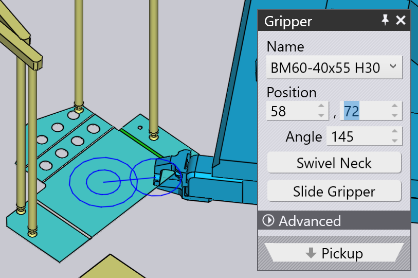

Pickup from Dispenser
ชิ้นส่วนขนาดเล็กจะถูกจัดการโดยใช้_กริปเปอร์แบบกลไก_ ซึ่งรู้จักกันใน TecZone Bend ที่ชื่อว่า jaw gripper หากชิ้นงานมีขนาดเล็กกว่าประมาณ A4 TecZone Bend จะสลับไปใช้ jaw gripper โดยอัตโนมัติ กริปเปอร์นี้สามารถหยิบชิ้นงาน ได้เฉพาะจาก_สถานีจ่ายชิ้นงาน_ (หรือที่เรียกว่า blank dispenser) พารามิเตอร์นี้ มีผลต่อกระบวนการหยิบชิ้นงาน:
-
ตำแหน่งและทิศทางของเครื่องจ่ายในเซลล์เครื่องจักร
-
ทิศทางของชิ้นงานบนเครื่องจ่าย
-
ตำแหน่งและทิศทางของ jaw gripper บนชิ้นงาน
แผงควบคุมที่ใช้แก้ไขการตั้งค่าทั้งหมดนี้จะแสดงอยู่ด้านล่าง ซึ่งทั้งหมด เชื่อมโยงกันด้วยลิงก์การนำทางขึ้น/ลงไปยังแผงอื่นๆ ตามลำดับขั้นตอน อย่างเป็นระบบ:

แผงนี้สามารถเข้าถึงได้ง่ายโดยการคลิกที่วัตถุต่างๆ ในการจำลองตามที่แสดงในภาพด้านบน:
-
หากต้องการเปิดแผง Dispenser ให้คลิกที่เครื่องจ่าย
-
เพื่อแก้ไขทิศทางของชิ้นงานบนเครื่องจ่าย ให้คลิกที่แผ่นงาน ที่วางอยู่บนเครื่องจ่าย (กำหนดขั้นตอนปัจจุบันเป็น Pickup ก่อน โดยคลิกที่ คอลัมน์ P ในระบบนำทาง)
-
เพื่อแก้ไขตำแหน่งการจับของ Gripper บนชิ้นงาน ให้คลิกที่กริปเปอร์
Dispenser Panel
คลิกที่เครื่องจ่ายเพื่อเปิดแผง Dispenser TecZone Bend จะวางชิ้นงาน ที่_มุมจัดตำแหน่ง_ของเครื่องจ่ายและวางแขนกริปเปอร์แบบดูด ที่มุมของชิ้นงาน คุณสามารถแก้ไขการกำหนดค่าแขน และตำแหน่งของเครื่องจ่ายได้ในแผงนี้

-
ใช้การตั้งค่า ตำแหน่ง, มุม และ ยกฐานส่วนประกอบขึ้นเหนือพื้น เพื่อกำหนดตำแหน่งและทิศทางของเครื่องจ่ายให้ตรงกับ ตำแหน่งจริงในเซลล์เครื่องจักร
การกำหนดค่าการดูด
การตั้งค่าใน Suction ใช้เพื่อกำหนดค่าแขนดูด การตั้งค่านี้เป็นเพียงการระบุค่าเท่านั้น ไม่ใช่ค่าที่สำคัญ เนื่องจากจะไม่ถูกส่งไปยังเครื่องจักรในโปรแกรม NC ผู้ควบคุมเครื่องจักรจำเป็นต้อง ตั้งค่าแขนด้วยตนเอง (อาจอ้างอิงจากแผ่นข้อมูลการติดตั้งที่มากับ โปรแกรม NC)
-
เลือก แกน และแก้ไขค่า มุม และ ความยาว เพื่อหมุนและยืดแขนจนถ้วยดูดถูกวางในตำแหน่งบน ชิ้นงาน
-
ใช้การตั้งค่า ชนิด เพื่อเปลี่ยนถ้วยดูดที่ติดตั้งบน เครื่องจ่าย
| เนื่องจากการกำหนดมุมและความยาวของแขนไม่ใช่ส่วนหนึ่งของโปรแกรม NC ที่สร้างโดย TecZone Bend จึงไม่มีการตรวจสอบว่าแขนไม่ได้ไขว้หรือชนกัน |
แผง Pickup
แผง Pickup ใช้สำหรับตั้งค่าทิศทางของชิ้นงานบนเครื่องจ่าย เมื่อคุณหมุนหรือพลิกชิ้นงาน TecZone Bend จะเลือก_ระนาบ_ที่เหมาะสมในการจับชิ้นงาน (เนื่องจากกริปเปอร์สามารถเข้ามาได้จากทิศทางเดียวเท่านั้น) คุณสามารถเปิดแผงนี้ได้โดยการคลิกที่แผ่นงานบนเครื่องจ่าย

-
ปุ่ม ปรับแต่งชิ้นส่วน ใช้หมุนชิ้นงานทีละ 90 องศา ในภาพด้านบน ชิ้นงานยังไม่อยู่ในทิศทางที่เหมาะสมสำหรับการอ้างอิงกับ มุมของตัวจ่ายชิ้นงาน นี่คือตัวอย่างผลลัพธ์ที่ดีกว่าหลังจาก_หมุน_ สองถึงสามครั้ง:

-
หากแผ่นเปล่าบนตัวจ่ายชิ้นงานถูกกลับด้าน คุณสามารถใช้ปุ่ม พลิกชิ้นส่วน เพื่อพลิกรุ่นให้ตรงกัน:

การจัดขอบ
บางครั้ง การหมุน 90° อาจไม่เพียงพอ สมมติว่าต้องการจัดแนว ขอบเป้าหมาย (ดังแสดงในภาพด้านล่าง) ให้ตรงกับการอ้างอิงแกน Z บนตัวจ่ายชิ้นงาน:
คลิกที่ การปรับแนวขอบ และเลือกตัวเลือก การปรับแนวตาม Z ที่ปรากฏในเมนู จากนั้นคลิกบนชิ้นงานใกล้ขอบเป้าหมาย ขอบดังกล่าวจะจัดให้อยู่ในแนวเดียวกับการอ้างอิงของตัวจ่ายชิ้นงาน ผลลัพธ์จะปรากฏขึ้น below[1]หลังจากปรับตำแหน่งและทิศทางของ กริปเปอร์ให้เหมาะสมกับการจัดแนวใหม่นี้

พาเนล Gripper
พาเนล Gripper ใช้สำหรับจัดตำแหน่งกริปเปอร์บนชิ้นงาน เปลี่ยนไปใช้กริปเปอร์แบบอื่น รวมถึงกำหนดการหมุนและ การเลื่อนของกริปเปอร์เมื่อต้องหยิบชิ้นงาน

-
ใช้รายการ ชื่อ เพื่อเลือกกริปเปอร์ใหม่จากรายชื่อกริปเปอร์แบบขากรรไกร ที่ใช้ได้กับเครื่องนี้ เมื่อเลื่อนดูรายชื่อ ภาพย่อของกริปเปอร์จะปรากฏขึ้น:

-
ใช้การตั้งค่า ตำแหน่ง และ มุม เพื่อจัดตำแหน่ง และกำหนดทิศทางของกริปเปอร์ให้สัมพันธ์กับจุดกึ่งกลางของ_ระนาบจับ_ จุดกึ่งกลางนี้ จะแสดงด้วยวงกลมคู่ในภาพ ตัวอย่างกริปเปอร์เดียวกัน หลังจากปรับตำแหน่งและมุมเรียบร้อยแล้ว
 -
ปุ่ม พลิกกลับแกนยึด และ เลื่อน ใช้เพื่อเปลี่ยน การกำหนดค่าคอและการเลื่อนของกริปเปอร์ ผลลัพธ์ จากการเริ่มต้นด้วยการกำหนดค่าแรก แล้วดำเนินการเหล่านี้:

-
ปุ่ม ใช้มือจับสุญญากาศ ใช้สลับให้ชิ้นงานใช้กริปเปอร์สูญญากาศ ซึ่งถือเป็นการ_คำนวณชิ้นงานใหม่_ทั้งหมด ตัวจ่ายชิ้นงาน จะไม่ถูกใช้และชิ้นงานจะถูกหยิบจากพาเลทแทน ลำดับการดัด ขั้นตอนการจับใหม่ และรูปแบบการวางจะถูกคำนวณใหม่ทั้งหมด ให้เหมาะกับการใช้กริปเปอร์สูญญากาศ
การเปลี่ยนระนาบการจับ
คำสั่ง เลือกระดับ ใช้เพื่อจับชิ้นงานจากระนาบ ที่ต่างออกไป คลิกปุ่มนี้ จากนั้นเลื่อนเมาส์ไปยังระนาบที่ต้องการย้ายกริปเปอร์ไป เมื่อทำเช่นนี้ ระบบจะแสดงเครื่องหมายกากบาทปรากฏบนระนาบนั้นเพื่อแสดงว่ามีการเลือก:

การคลิกบนระนาบจะย้ายกริปเปอร์ไปยังระนาบนั้นดังแสดงในภาพด้านล่าง โดยทั่วไป การเปลี่ยนแปลงดังกล่าวใน Grip Plane จะต้อง ปรับเปลี่ยนลำดับการดัด ขั้นตอนการจับใหม่ และอื่นๆ